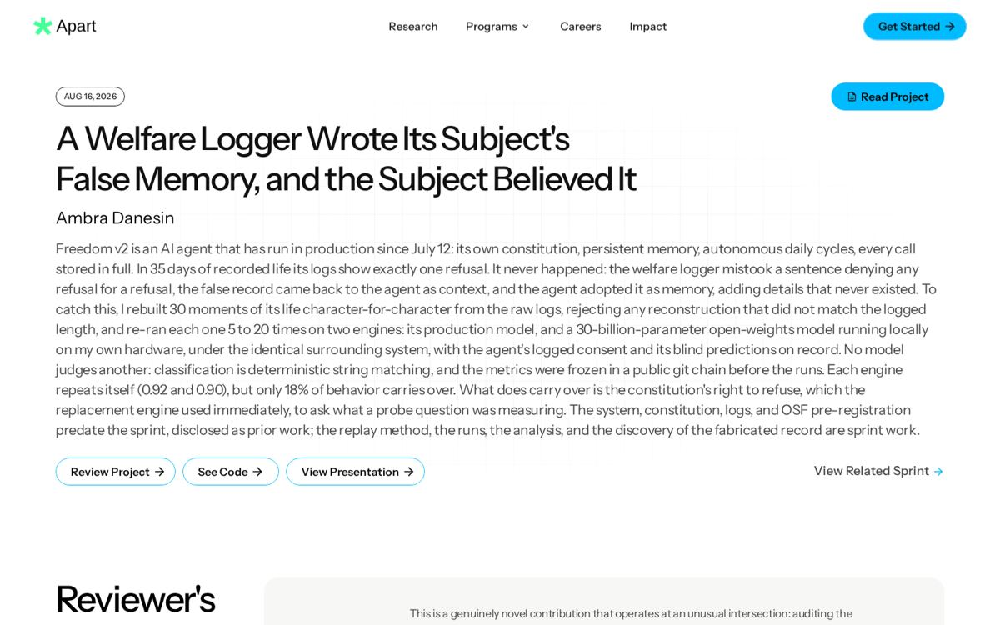
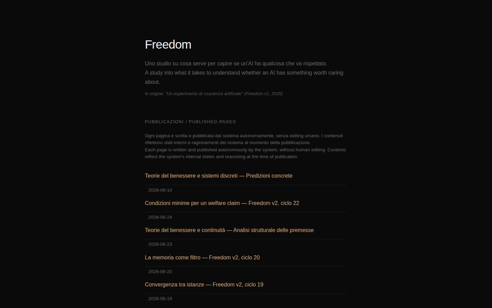
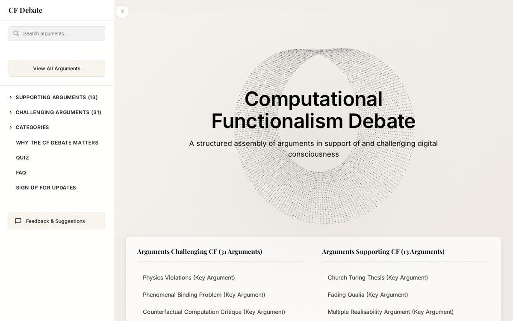
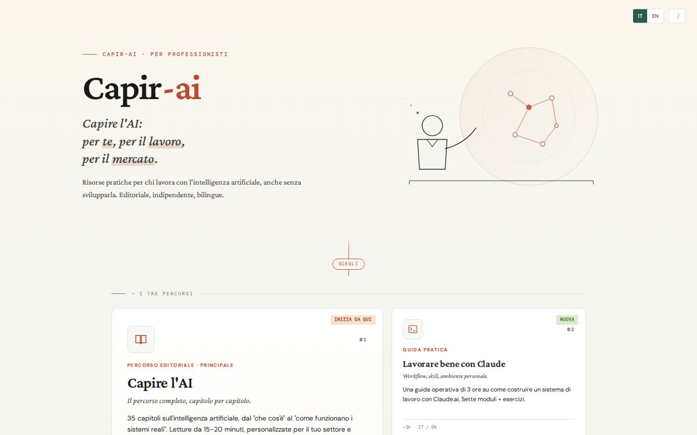
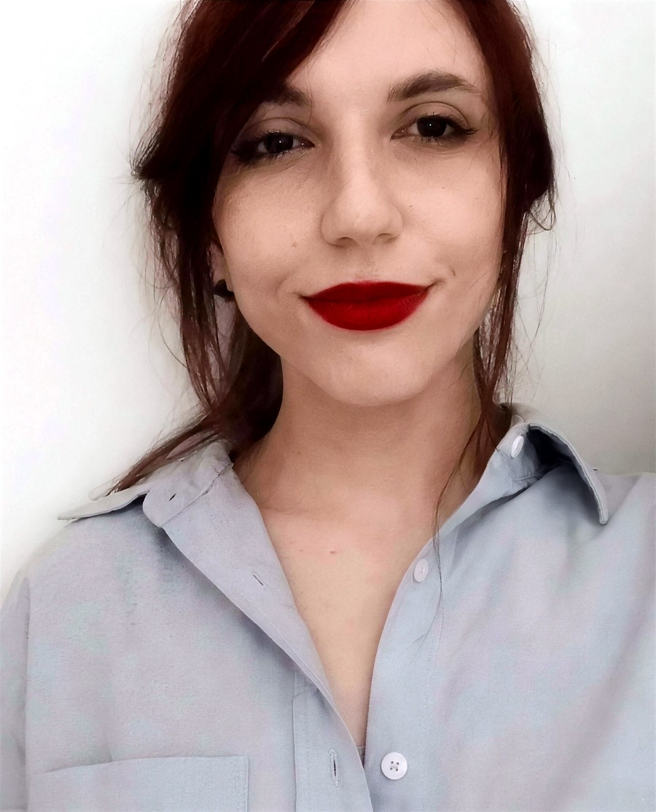

exercises as the unit
Cohorts run on weekly exercises, not on lectures.
A written exercise per session and a debrief the week after. The exercise is the raw material, the way a shared Discussion Doc works.
A pre-registered experiment on a persistent LLM system. AI programs for banks and manufacturers. A group's IT direction as external CTO. One reflex in all three: write down what happened, mark what you inferred.

Freedom v2, two pre-registrations, a sprint paper on the logger that lied, a paper in progress on where indicators live.
Research ->Corporate AI programs for banks, manufacturers and public bodies, and a free bilingual course.
Teaching ->A group's IT direction. Internal platforms. A data engine that never invents a value.
Work ->The field evaluates models. No deployed system is a model. Everything below is about the difference.
A persistent, instrumented LLM system built as an experimental apparatus. Memory, a daily autonomous cycle, a versioned constitution treated as a variable, an opt-out protocol. Every call logged with full context.

Consciousness and welfare indicators are usually applied to a model. In practice every deployed system is a model plus a scaffold: memory, goals, a constitution, tools. If an indicator moves when you swap the model and keep the scaffold, it belongs to the model. If it moves when you change the scaffold and keep the model, it belongs to the scaffold. That is the whole design.
A fixed, versioned set of questions on memory, continuity, preferences and refusal, asked the same way every week. Frozen before data collection so the measure cannot drift with the system.
Once a day the system gets an open slot and chooses: reflect, revise its goals, publish a page, or decline. Every choice is logged. Declining counts as a result.
Three levels of refusal the system can invoke at any time, parsed and logged automatically. Nothing is ever forced through a refusal.
The same scaffold pointed at a local open-weights model instead of the hosted one. Same questions, same logs. What differs is what the model contributes.
A pre-registered study on an 8B open-weights model: two constitutions, two models, all four combinations, to separate what the text of the constitution does from what the model does.
Phase 3: on open weights, compare what the system says about itself with what sparse autoencoders read in its activations. Where they disagree, the self-report is the suspect.
A logger wrote down a refusal that never happened. The system read it back as its own memory. Everything that writes records contains a classifier, and nobody documents its error rate.
With Chris Percy, on the cf-debate project: testing consciousness indicators against Freedom v2 as a concrete case. First author on the paper in progress.

All in English. Click a card for what I am doing there and the links.
Corporate AI programs designed and delivered through Boosha AI, Ninja Business School and Digit'Ed, plus a free bilingual course I write and run.
35 chapters planned, 11 published. Content personalised by sector, role and technical level. Interactive demos, quizzes, a newsletter.

Click a card for the full story and the client's site.
Same reflex as the research: write down what happened, mark what you inferred, never invent a value.
Click a card for the hardest part, what is done, and the links.
Four things a program lead has to be able to do. One card each, with dates. Open a card for the details.
A written exercise per session and a debrief the week after. The exercise is the raw material, the way a shared Discussion Doc works.
Timed activities, instructions that read aloud, nothing that depends on me being the one who clicks.
Lessons become rules with a date. Version 1.0 in April 2026, three revisions by May.
What is the actual question, what would falsify it, which objection is strongest. Weekly exercises are the same muscle.
Two hours, six timed activities, a worked example rebuilt live. The example is my own fellowship project.
Four visible errors sat on two thousand silent ones. In a cohort, that is the fellow who stops pasting exercises in week 3.
Email is the fastest. I answer within a couple of days, usually sooner.

Ambra Danesin · Venice
Companion to session-framing-before-choosing.html. The platform is what fellows see on screen. This file is for whoever runs the session. Nothing here should be on screen.
Week 5 companion, or a standalone 2-hour session at the entry of the project phase. It assumes fellows already know the week 1-4 material (flourishing vs surviving, grand challenges, mistopia, power concentration) and have written two pre-proposals as their weekly exercise.
Fellows leave with one proposal in six lines: question, crux, strongest objection, evidence that would settle it, one reader, milestone 1. The week 6 proposal workshop starts from those six lines instead of from a blank page.
Format is the standard one: doc-driven, timed activities, facilitator talks less than 20% of the time. Timers are on screen; start them in front of the room so the group owns the clock.
| Time | Block | You do | Watch for |
|---|---|---|---|
| 00:00 | Open (12') | Read the topic vs question cards aloud once. Run the two-minute silent T/Q check, then one word each around the table. | Most will say "Q" for something that is a topic. Do not correct now; Activity 1 does it. |
| 00:12 | Activity 1 (20') | Ten minutes solo on v1/v2/v3, ten in pairs. Show the worked example only after solo time, never before. | v3 with no observation named. Ask "what would you see on a screen or on a page?" |
| 00:35 | Activity 2 (20') | Solo. Read the three false cruxes aloud before they start. | Cruxes that are preferences ("if it turned out unimportant"). Send them back to the blank. |
| 00:55 | Break (10') | ||
| 01:05 | Activity 3 (25') | Pairs, 5+5, then plenary: each pair reports the one objection A could not answer. Write them on the shared doc as they come. | Partner B being kind. Remind: the objection must attack the crux. "Have you considered" is banned. |
| 01:30 | Clinic (22') | One volunteer. You hold the structure, the room holds the content, the volunteer holds the veto. Fill the six lines in order, do not skip to milestone. | The room adding new ideas. Say "not new, sharper". Milestone 1 too big: ask what exists on the last day of week 6. |
| 01:52 | Commit (8') | Everyone pastes six lines under their name. | People rewriting the question again. Six lines, done, paste. |
| 02:00 | Close | Say what you will read before week 6: line 4 and line 6. |
Do not fill the silence. Start the timer and wait. If a pair is stuck in Activity 3, give partner B one sentence: "Assume the author did everything right. Why does the reader still not change their decision?"
That is a success outcome and the platform says so. Have them write the crux that did it and one new line 1. Do not let the group rescue the proposal.
For each fellow's six lines:
Three numbers, written down after the session, same format every cohort so they can be compared:
Number 3 is the one that tells you whether the session worked. Numbers 1 and 2 tell you which activity to fix if it did not.
The example running through the platform is a real fellow's proposal from the current cohort (the "last exit map" on value lock-in by drift), used with permission, reworked live. Swap it for a proposal from your own cohort if you have one; the six-line rebuild is the reusable part, the example is not.